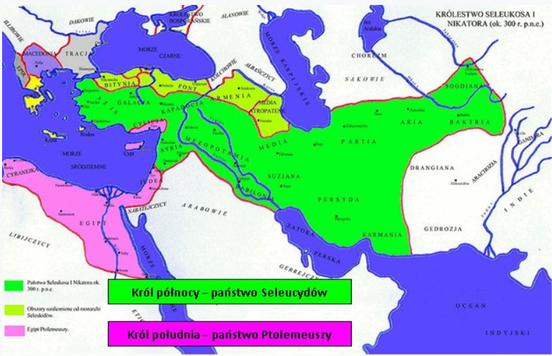

.
11 Rozdział Daniela
Daniela 11
„W pierwszym roku Dariusza Meda powstałem, aby mu dodać siły i ochronić go. (2) Lecz teraz oznajmię ci prawdę: Oto jeszcze trzej królowie powstaną w Persji, lecz czwarty zdobędzie większe bogactwa niż wszyscy. A gdy się wzmocni dzięki swoim bogactwom, poruszy wszystkich przeciwko państwu greckiemu. (3) I powstanie bohaterski król, i będzie miał wielką władzę, i będzie czynił, co zechce. (4) A gdy powstanie, rozpadnie się jego królestwo i będzie rozdzielone między cztery strony świata; lecz nie między jego potomków, i nie będzie miało takiej mocy, z jaką on władał, gdyż jego królestwo będzie rozbite i przypadnie innym z pominięciem tamtych. (5) A król południa będzie potężny, lecz jeden z jego książąt będzie mocniejszy od niego i obejmie władzę; a jego władztwo będzie potężne. (6) Po upływie lat sprzymierzą się; i córka króla południa wyruszy do króla północy, aby doprowadzić do ugody, lecz sprawa pozostanie bez skutku i nie utrzyma się ani on, ani jego potomek, będzie wydana wraz z tym, który ją sprowadzi, z dzieckiem swoim i małżonkiem swoim. (7) W owych czasach na jego miejsce wyrośnie latorośl z jego korzeni; wyruszy on przeciwko wojsku i wtargnie do twierdzy króla północy, dokona na nim swojego dzieła i zwycięży. (8) Nawet ich bogów wraz z ich lanymi posągami i ich kosztownymi naczyniami ze srebra i złota uprowadzi jako łup do Egiptu; i przez wiele lat nie będzie prowadził wojny z królem północy, (9) lecz ten wtargnie do królestwa króla południa i powróci do swojej ziemi. (10) Jego syn przygotuje się do wojny i zbierze mnóstwo potężnych wojsk, i uderzy, zaleje jak powódź i w ponownej wyprawie posunie się aż do jego twierdzy. (11) Wtedy król południa będzie rozdrażniony, wyruszy i będzie walczył z nim, to jest z królem północy; ten wystawi wprawdzie liczne wojsko, ale wojsko to wpadnie w jego ręce. (12) Wojsko będzie zniszczone, a jego serce będzie wyniosłe; a choć pokona wiele tysięcy, jednak nie okaże się mocnym. (13) A król północy znowu wystawi jeszcze liczniejsze wojska niż pierwej i po upływie wielu lat wyruszy z wielkim wojskiem i z potężnym taborem. (14) W owych czasach wielu powstanie przeciwko królowi południa; i powstaną gwałtownicy spośród twojego ludu, by wypełnić widzenie, lecz potkną się. (15) Potem wyruszy król północy i usypie wał, i zdobędzie miasto obronne; a siły z południa nie ostoją się ani jego doborowe oddziały nie będą mogły stawić oporu. (16) Lecz ten, który wyprawi się przeciwko niemu, będzie robił, co będzie chciał; i nikt nie stawi oporu. I stanie w prześlicznej ziemi, i dokona zniszczenia. (17) Potem będzie dążył do opanowania całego jego królestwa; zawrze z nim ugodę i da mu córkę za żonę, aby zniszczyć królestwo, lecz to się nie stanie i to mu się nie uda. (18) Potem zwróci uwagę na wyspy i wiele ich zdobędzie; lecz pewien dowódca położy kres jego zniewadze, ponadto odpłaci mu za tę zniewagę. (19) Potem zwróci uwagę na twierdze swojej ziemi, lecz potknie się i upadnie, i zniknie na zawsze. (20) I powstanie na jego miejsce taki, który wyśle poborcę podatków poprzez prześliczne królestwo, lecz ten po kilku dniach zostanie zdruzgotany, ale nie wskutek gniewu lub wojny. (21) A po nim powstanie wyrzutek, któremu nie powierzą godności królewskiej, lecz przyjdzie niespodziewanie i podstępnie zdobędzie władzę. (22) Wojska będą przed nim doszczętnie zniesione jakby powodzią i rozbite, nawet książę przymierza będzie zmiażdżony. (23) Od chwili sprzymierzenia się z nim będzie postępował zdradliwie; wyruszy, będzie silny mimo małego zastępu. (24) Wpadnie niespodzianie do najżyźniejszych części krainy i uczyni to, czego nie czynili jego ojcowie ani jego praojcowie; łup i zdobycz, i mienie hojnie rozdzieli między nich; uknuje plany przeciwko twierdzom, lecz tylko na krótki czas. (25) Wzbudzi swoją siłę i swoją odwagę z wielkim wojskiem przeciwko królowi południa; a król południa przygotuje się do walki z wielkim i bardzo potężnym wojskiem, lecz nic nie wskóra, gdyż plany uknują przeciwko niemu. (26) Towarzysze jego stołu doprowadzą go do upadku, jego wojsko pójdzie w rozsypkę i padnie wielu zabitych. (27) Obaj królowie mają w sercu złe myśli i przy jednym stole okłamują się nawzajem; lecz im się nie uda, gdyż w wyznaczonym czasie nadejdzie kres. (28) Potem powróci z wielkimi bogactwami do swojej ziemi, lecz jego umysł będzie przeciwko świętemu przymierzu; i tak postąpi, i wróci do swojej ziemi. (29) W czasie wyznaczonym wyruszy znowu na południe, lecz tym razem nie powiedzie mu się tak jak za pierwszym razem. (30) Gdyż przeciwko niemu wyruszą kittejskie okręty, wskutek czego straci otuchę. Potem wróci i wyleje swój gniew na święte przymierze: i tak postąpi; i znowu zwróci uwagę na tych, którzy porzucili święte przymierze. (31) A wojska wysłane przez niego wystąpią i zbezczeszczą świątynię i twierdzę, zniosą stałą codzienną ofiarę i postawią obrzydliwość spustoszenia. (32) A tych, którzy bezbożnie będą postępować wbrew przymierzu, zwiedzie pochlebstwami do odstępstwa, lecz lud tych, którzy znają swojego Boga, umocni się i będą działać. (33) A roztropni wśród ludu doprowadzą wielu do właściwego poznania; lecz przez pewien czas padać będą od miecza i ognia, od uprowadzenia i rabunku. (34) A gdy będą padać, doznają małej pomocy; i wielu przyłączy się do nich obłudnie. (35) Nawet niektórzy spośród roztropnych upadną, aby wśród nich nastąpiło wypławienie, oczyszczenie i wybielenie aż do czasu ostatecznego, gdyż to jeszcze potrwa pewien czas. (36) A król zrobi, jak będzie chciał; będzie się wynosił i wywyższał ponad wszelkie bóstwo; i przeciwko Bogu bogów dziwne rzeczy będzie wygadywał, i będzie miał powodzenie, aż dopełni się miara gniewu, bo to, co jest postanowione, wypełni się. (37) Ani o bogów swoich ojców nie będzie się troszczył, nie będzie się troszczył o ulubieńca kobiet ani o żadnego boga, bo wyniesie się ponad wszystkich. (38) Zamiast tego będzie czcił boga warowni; złotem, srebrem, drogimi kamieniami i kosztownościami będzie czcił boga, którego nie znali jego ojcowie. (39) Do warownych grodów wprowadzi lud obcego boga; tych, którzy go uznają, obsypie zaszczytami, nada im władzę nad wieloma i w nagrodę obdziela ziemią. (40) A w czasach ostatecznych zetrze się z nim król południa. Lecz król północy uderzy na niego z wozami, jeźdźcami i z wielu okrętami; wtargnie do krajów i zaleje je jak powódź. (41) Wtargnie i do prześlicznej ziemi, a wtedy padną dziesiątki tysięcy; lecz rąk jego ujdą: Edom i Moab, i główna część Amonitów. (42) A gdy wyciągnie swoją rękę po kraje, nawet ziemia egipska nie ocaleje. (43) Opanuje on skarby złota i srebra i wszystkie klejnoty egipskie. Libijczycy i Kuszyci pójdą w jego orszaku. (44) Wtem przestraszą go wieści ze wschodu i północy, dlatego wyruszy w wielkiej złości, aby wygubić i wytępić wielu. (45) I rozbije wspaniałe swoje namioty między morzem i prześliczną świętą górą. Wtedy dojdzie do swojego kresu i nikt mu nie pomoże.” (Daniela 11:1-45).
„W pierwszym roku Dariusza Meda powstałem, aby mu dodać siły i ochronić go” (11:1).
Daniel otrzymał dość szczegółową wizję przyszłych wydarzeń, w pierwszym roku Dariusza Meda, tj. w 539 roku przed Chrystusem.
Dariusz był synem Achaszwerosza i medyjskim władcą nad Chaldeją - ustanowionym przez króla perskiego - Cyrusa II Wielkiego, z którym przez jakiś czas wspólnie władał i który go na tym stanowisku obsadził.
Było to wypełnienie proroctwa z Daniela 5:28 mówiącego o podziale Babilonu między Medów i Persów.
„Lecz teraz oznajmię ci prawdę: Oto jeszcze trzej królowie powstaną w Persji, lecz czwarty zdobędzie większe bogactwa niż wszyscy. A gdy się wzmocni dzięki swoim bogactwom, poruszy wszystkich przeciwko państwu greckiemu”. (11:2).
W pierwszym roku Dariusza, Danielowi objawiono, że po Dariuszu będzie jeszcze trzech króli, lecz czwarty będzie nadzwyczaj potężny i poruszy wielu przeciw Grecji.
Tak też się stało, po Dariuszu Medzie i Cyrusie II Wielkim, panowali kolejno:
1. Kambyzes II Aswerus (530-522).
2. Bardija-Artakserkses (522-522).
3. Dariusz I Wielki (522-486).
Po tych władcach, nastąpiły rządy czwartego króla, syna Dariusza I, którym był:
4. Kserkses I Achaszwerosz (486-465).
W 480 roku przed Chrystusem wyruszył na podbój Grecji na czele ogromnej armii, składającej się z 46 nacji, w tym tak zwanej zawodowej armii 10 000 „nieśmiertelnych”, których powołał jego ojciec (ten wątek można obejrzeć w filmie zatytułowanym „300”).
Po nierozstrzygniętej bitwie morskiej pod Artemizjon pokonał Spartan pod Termopilami, a następnie spalił Ateny, potem jego flota została rozbita pod Salaminą przez ateńskie okręty, a w 479 roku poniósł klęskę pod Platejami.
Grecji nie zdołał podbić, jednakże za jego czasów nastąpił szczyt potęgi i największa ekspansja terytorialna persów, wypełniając tym samym proroctwo z Daniela 11:2.
„I powstanie bohaterski król, i będzie miał wielką władzę, i będzie czynił, co zechce”. (11:3).
Bohaterski król, to nie, kto inny, jak grecki król Aleksander III Wielki (336-323), zwany też Aleksandrem Macedońskim, który podbił państwo Medo-Perskie.
Aleksander Wielki zmarł w wieku 33 lat. Gdy umierał w Babilonie, jego imperium rozciągało się od Grecji aż po Indie.
O jego wyczynach i podbojach nie trzeba pisać, wystarczy spojrzeć do historii, aby się przekonać, że „miał wielką władzę, i czynił, co zechciał”.
O nim czytaliśmy także w Daniela 8:6-7, 21.
„A gdy powstanie, rozpadnie się jego królestwo i będzie rozdzielone między cztery strony świata; lecz nie między jego potomków, i nie będzie miało takiej mocy, z jaką on władał, gdyż jego królestwo będzie rozbite i przypadnie innym z pominięciem tamtych”. (11:4).
Dokładnie tak się stało, czytaliśmy o tym także w Daniela 8:8, 22, gdzie cztery rogi, które wyrosły na miejscu Wielkiego rogu (Aleksandra III Wielkiego), oznaczały cztery królestwa.
Po śmierci Aleksandra władzy nie przejął nikt z jego potomków, lecz czterech jego generałów (diadochów):
1. Antypater (Władca Macedonii i Grecji).
2. Antygon I Jednooki (Władca Frygii i Pamfilii).
3. Lizymach (Władca Azji Mniejszej i Tracji).
4. Ptolemeusz I Soter (Władca Egiptu, Cypru i Palestyny, założyciel dynastii Ptolemeuszy).
W następnych latach (do 281 roku) wodzowie ci i ich następcy toczyli walkę o sukcesję po Aleksandrze (wojny diadochów).
W 301 roku przed Chrystusem miała miejsce decydująca bitwa pod Ipsos, w wyniku, której poległ Antygon - ostatni przedstawiciel władzy centralnej. Wówczas powstały cztery królestwa:
1. Lizymacha w Tracji i Bitynii.
2. Kassandra w Macedonii.
3. Ptolemeusza, jako „króla południa” w Egipcie, Libii, Arabii.
4. Seleukosa, jako „króla północy” w Syrii, Mezopotamii, Persji, Baktrii, Babilonii, aż do Indii.
W 281 roku Seleukos odniósł zwycięstwo w bitwie pod Kurupedion, zadając klęskę i śmierć 75-letniemu Lizymachowi. Tym samym zakończył się okres wojen diadochów. W ich wyniku powstały 3 monarchie, z których liczyły się tak naprawdę tylko dwie:
1. Azja Przednia (Syria) Seleukidów, opisana w księdze Daniela, jako „król północy”.
2. Egipt Ptolemeuszów, opisany w tej samej księdze, jako „król południa”.
Trzecią mniej istotną była Macedonia Antygonidów.
Dwa pierwsze mocarstwa były najpotężniejsze i one zdobywały na przemian rozległe terytoria, co zostało opisane w rozdział 11 Księgi Daniela (11:5-45), jako wojny pomiędzy imperium Ptolemeuszy a imperium Seleucydów, przedstawionych tam, jako konflikt pomiędzy „królem południa” (Egipt) i „królem północy” (Syria), którzy toczą nieustanne walki o część Syrii i Palestynę, atrakcyjne ze względu na przebiegające tam szlaki handlu dalekosiężnego.
Walki te, toczone poprzez około 150 lat, nieprzerwanie do czasu opanowania tych terenów przez Rzym, choć nieuwieńczone żadnymi trwałymi rezultatami, często miały negatywne konsekwencje dla Izraela, który znalazł się na granicy pomiędzy dwoma wrogimi imperiami.

„A król południa będzie potężny, lecz jeden z jego książąt będzie mocniejszy od niego i obejmie władzę; a jego władztwo będzie potężne”. (11:5).
Mowa tu o Ptolemeuszu I Soterze (323-282), jednym z diadochów Aleksandra, założycielu dynastii Ptolemeuszy – „królów południa”, który władał Egiptem Cyprem i Palestyną (zajął Jerozolimę w 321 roku).
W roku 304 przed Chrystusem przyjął tytuł króla. Jego potomkowie panowali w Egipcie aż do roku 30 przed Chrystusem, kiedy Kleopatra VII, wdała się w rozgrywkę o władzę z Imperium Rzymskim i została pokonana przez rzymskiego wodza Oktawiana (późniejszego cesarza Augusta).
Ptolemeusz I Soter był jednym z najlepszym generałów w armii Aleksandra Wielkiego i stał się potężnym władcą – „królem”, jednakże jego syn i następca Ptolemeusz II Filadelfos (284-246) stał się jeszcze potężniejszy – „jeden z jego książąt będzie mocniejszy od niego”.
Był on umiejętnym administratorem oraz organizatorem życia gospodarczego i kulturalnego kraju. Za jego czasów Aleksandria zaczęła odgrywać wielką rolę, jako ośrodek kulturalny Egiptu i świata helleńskiego. Na ten okres datuje się założenie Biblioteki Aleksandryjskiej, która była największą biblioteką świata starożytnego. Wówczas też przetłumaczono w Aleksandrii Stary Testament na język grecki i nadano mu nazwę Septuaginta.
„Po upływie lat sprzymierzą się; i córka króla południa wyruszy do króla północy, aby doprowadzić do ugody, lecz sprawa pozostanie bez skutku i nie utrzyma się ani on, ani jego potomek, będzie wydana wraz z tym, który ją sprowadzi, z dzieckiem swoim i małżonkiem swoim”. (11:6).
Polityczne małżeństwo zostało zawarte pomiędzy córką wspomnianego Ptolemeusza II Filadelfosa (króla południa), o imieniu Berenika, a Antiochem II Theosem (261-246, królem północy) z dynastii Seleucydów, synem i następcą Seleukosa I Nikatora.
Antioch II Theos był zobowiązany rozwieść się ze swoja własną żoną, aby umożliwić ten układ i pojąć za żonę księżniczkę egipską, córkę Ptolemeusza II.
Jednakże rozwiedziona żona otruła Antiocha II oraz zamordowała księżniczkę egipską Berenikę i obsadziła na tronie swojego starszego syna Seleukosa II Kallinikosa (246-226).
„W owych czasach na jego miejsce wyrośnie latorośl z jego korzeni; wyruszy on przeciwko wojsku i wtargnie do twierdzy króla północy, dokona na nim swojego dzieła i zwycięży. (8) Nawet ich bogów wraz z ich lanymi posągami i ich kosztownymi naczyniami ze srebra i złota uprowadzi jako łup do Egiptu; i przez wiele lat nie będzie prowadził wojny z królem północy”. (11:7-8).
Ptolemeusz III Euergetes (246-221 król południa), brat zamordowanej Bereniki, trzeci władca Egiptu z dynastii Ptolemeuszy, najechał Syrię, zajął port w Antiochii Syryjskiej i dotarł ze swoją armią prawie do Babilonu.
Podczas tej wojny wywiózł on z Syrii wiele kosztowności, w tym zrabowane bogactwa Egiptu, podczas najazdu króla Kambyzesa 300 lat wcześniej. Ptolemeusz oddał kosztowności pierwotnym właścicielom, czym zjednał sobie dużą przychylność egipskich kapłanów.
Za panowania Ptolemeusza III Egipt znalazł się u szczytu swojej potęgi.
„Lecz ten wtargnie do królestwa króla południa i powróci do swojej ziemi”. (11:9).
Po dwóch latach Seleukos II Kallinikos (246-226, król północy) reaktywował swoją armię i wyruszył przeciwko Egiptowi.
Po odniesieniu potężnych strat powrócił do Antiochii z resztką rozbitej armii.
„Jego syn przygotuje się do wojny i zbierze mnóstwo potężnych wojsk, i uderzy, zaleje jak powódź i w ponownej wyprawie posunie się aż do jego twierdzy. (11) Wtedy król południa będzie rozdrażniony, wyruszy i będzie walczył z nim, to jest z królem północy; ten wystawi wprawdzie liczne wojsko, ale wojsko to wpadnie w jego ręce. (12) Wojsko będzie zniszczone, a jego serce będzie wyniosłe; a choć pokona wiele tysięcy, jednak nie okaże się mocnym”. (11:10-12).
Synami Seleukosa II Kallinikosa – „króla północy” byli Seleukos III Keraunos, który został zamordowany podczas kampanii w Azji Mniejszej oraz Antioch III Wielki (223-187), który rozpoczął ponownie wojnę z Egiptem.
W 219 roku przed Chrystusem po opanowaniu Selekcji, Antioch III ruszył na południe, zajmując Tyr i Ptolemais, dwie nadmorskie twierdze.
Wiosną 218 roku przed Chrystusem, Antioch III wyruszył przeciw Egiptowi. Szlak jego marszu znaczyły zwycięstwa w potyczkach i zajmowanie poszczególnych miast w Fenicji i Izraelu. Finał tej wojny nastąpił pod Rafią (na południowy zachód od Gazy) na wiosnę 217 roku przed Chrystusem, gdzie jego wojska zostały pokonane przez armie Ptolemeusza IV Filopatora – „króla południa”.
Ptolemeusz IV Filopator, leniwy i rozpustny władca, podpisał traktat pokojowy z Antiochem III. Po czym świętował swoje zwycięstwo poprzez objeżdżanie wschodnich prowincji swojego imperium, włączając w to Jerozolimę. Paraliż powstrzymał go od wkroczenia do miejsca najświętszego w świątyni Bożej. Po powrocie do Egiptu jego rozgoryczenie i upokorzenie znalazło ujście w prześladowaniu Egipskich Żydów.
Zwycięstwo Ptolemeusza IV Filopatora, uwieńczone podpisaniem traktatu pokojowego, nie przyniosło mu sławy, gdyż kilkanaście lat później Antioch III ponownie zwróci swoją armię przeciwko Egiptowi.
Wyruszył w 244 roku przed Chrystusem z kontrofensywą odzyskując wszystkie terytoria i pokonując wojska Ptolemeusza w efekcie, czego przyjął tytuł Kallinikos („Zwycięski”). Dalsze losy wojny, które zakończyły się w 241 roku upłynęły pod znakiem przewagi Ptolemeusza.
„A król północy znowu wystawi jeszcze liczniejsze wojska niż pierwej i po upływie wielu lat wyruszy z wielkim wojskiem i z potężnym taborem. (14) W owych czasach wielu powstanie przeciwko królowi południa; i powstaną gwałtownicy spośród twojego ludu, by wypełnić widzenie, lecz potkną się. (15) Potem wyruszy król północy i usypie wał, i zdobędzie miasto obronne; a siły z południa nie ostoją się ani jego doborowe oddziały nie będą mogły stawić oporu. (16) Lecz ten, który wyprawi się przeciwko niemu, będzie robił, co będzie chciał; i nikt nie stawi oporu. I stanie w prześlicznej ziemi, i dokona zniszczenia”. (11:13-16).
Po śmierci Ptolemeusza IV Filopatora na tronie zasiadł, w wieku 4 lat, jego syn, jako Ptolemeusz V Epifanes.
Po 12 latach od czasu bitwy pod Rafią Antioch III Wielki wyruszył ponownie z jeszcze większą armią, aby podbić Egipt. Zwrot „wielu” odnosi się tutaj do sojuszników Antiocha III, między innymi Filipa V Macedońskiego.
W toku działań wojennych wojska Seleukidy do roku 201 przed Chrystusem niemal bez problemu opanowały Celesyrię, Fenicję oraz Izrael. Władze aleksandryjskie zareagowały na to wysłaniem potężnej armii pod dowództwem wytrawnego wodza, najemnika Skopasa z Etolii, który rozpoczął działania ofensywne w Izraelu. Rozstrzygnięcie nastąpiło niedaleko źródeł Jordanu, pod Panion, gdzie doszło do potężnej batalii między wojskami Skopasa i Antiocha III Wielkiego (200 rok). Była to jedna z największych bitew ówczesnego świata, porównywalna do Rafii, o bardzo dużym znaczeniu dla dziejów politycznych monarchii Seleucydów i regionu.
Bitwa, zakończyła się klęską Skopasa, a tym samym „króla południa”. W ten sposób Celesyria, Fenicja i Izrael znalazły się w granicach imperium Seleucydów.
Termin „prześliczna ziemia” odnosi się do Izraela.
„Potem będzie dążył do opanowania całego jego królestwa; zawrze z nim ugodę i da mu córkę za żonę, aby zniszczyć królestwo, lecz to się nie stanie i to mu się nie uda.” (11:17).
W 197 roku przed Chrystusem Antioch III Wielki – „król północy” wysłał flotę przeciw Cylicji, Licji i Karii (obecnie terytoria Turcji), które pozostawały pod panowaniem Egiptu. Jednakże poniósł ogromną porażkę ze strony Rzymu, który wkraczał na arenę polityczną.
W tym samym roku Antioch III zaangażował małżeństwo swojej córki Kleopatry (204 - 176) z Ptolemeuszem V Epifanesem – „królem południa”.
Poślubienie przez Kleopatrę Ptolemeusza V było aktem politycznym, potwierdzającym pokój zawarty między państwem Seleucydów Antiocha III, a Egiptem Ptolemeusza V i zapewniającym neutralność Egiptu w spodziewanej wojnie Antiocha z Rzymem.
Jako posag Antioch III podarował swojej córce Celesyrię, Fenicję i Izrael, mając nadzieję, że ostatecznie uda mu się zaanektować Egipt. Nie stało się tak, ponieważ Kleopatra stanęła po stronie swojego męża. A kiedy wybuchła wojna między Antiochem III a Rzymianami, Egipt stanął po stronie Rzymu.
„Potem zwróci uwagę na wyspy i wiele ich zdobędzie; lecz pewien dowódca położy kres jego zniewadze, ponadto odpłaci mu za tę zniewagę. (19) Potem zwróci uwagę na twierdze swojej ziemi, lecz potknie się i upadnie, i zniknie na zawsze” (11:18-19).
W 196 roku przed Chrystusem Antioch III Wielki wyruszył na podbój zachodniej Grecji, Azji Mniejszej oraz Tracji (obecnie region geograficzny na pograniczu Bułgarii, Grecji i Turcji). Rzymianie odpowiedzieli wojną (192-188), w której Antioch poniósł klęskę. Potęga monarchii Seleucydów została złamana, a Rzym wkroczył na hellenistyczną arenę polityczną.
„I powstanie na jego miejsce taki, który wyśle poborcę podatków poprzez prześliczne królestwo, lecz ten po kilku dniach zostanie zdruzgotany, ale nie wskutek gniewu lub wojny” (11:20).
Seleukos IV Filopator (187-175), jako nowy władca imperium Seleucydów, zmuszony był uregulować ogromną kontrybucję, nałożoną przez Rzymian po porażce swojego ojca Antiocha III. Potrzebne kwoty próbował uzyskać ze skarbca Świątyni Jerozolimskiej (prześliczne królestwo) (2 Księga Machabejska 3:1-12, 24-31).
Seleukos IV zmuszony był prowadzić politykę pokojową wobec Rzymian. Jego próba wystąpienia przeciwko Pergamonowi, sojusznikowi Rzymu, spowodowała negatywną reakcję senatu.
W wyniku zaistniałej sytuacji Seleukos IV Filopator został zmuszony do wysłania do Rzymu, w charakterze zakładnika, najstarszego syna Demetriusza Sotera (175).
Seleukos IV Filopator został zabity przez swojego ministra Heliodorusa.
A teraz dochodzimy do momentu, w którym do akcji wkracza "bohater", opisywany już w 8 rozdziale Księgi Daniela pod postacią „małego rogu, który bardzo wyrósł ku południowi i ku wschodowi, i ku prześlicznej ziemi” (Daniela 8:9-10), a którym był Antioch IV Epifanes
„A po nim powstanie wyrzutek, któremu nie powierzą godności królewskiej, lecz przyjdzie niespodziewanie i podstępnie zdobędzie władzę”. (11:21).
Prawowitym następcą tronu Seleucydów był Demetriusz Soter, najstarszy syn Seleukosa IV Filopatora, który przetrzymywany był jako zakładnik w Rzymie. Przebywający w Syrii młodszy syn, Antioch, był jeszcze dzieckiem w tamtym czasie.
Antioch IV, zwany później Epifanesem, był bratem Seleukosa IV. Przebywał on również przez wiele lat w Rzymie (188-175), jako zakładnik, stąd podstawą jego późniejszej polityki, opartej na dogłębnej znajomości Rzymian i funkcjonowania imperium, będzie unikanie zadrażnień z republiką rzymską.
Po śmierci brata - Antioch IV, którego ta wiadomość zastała w Atenach, przeprawił się do Azji Mniejszej i dzięki pomocy władcy Pergamonu przybył do Syrii, obejmując władzę w państwie. Wkraczający, jako król do swej stolicy, znalazł tam drugiego króla, własnego bratanka, młodszego syna Seleukosa. Rozwiązał ten problem w ten sposób, że ożenił się z wdową po bracie i adoptował jego syna, ogłaszając go zarazem swoim współrządcą. Występował teraz, jako opiekun czuwający nad interesami małego króla.
Innymi słowy „podstępny wyrzutek” był z tego Antiocha IV…
„Wojska będą przed nim doszczętnie zniesione jakby powodzią i rozbite, nawet książę przymierza będzie zmiażdżony”. (11:22).
„Książę przymierza” odnosi się tutaj prawdopodobnie do morderstwa Oniasza III, arcykapłana w 171 roku przed Chrystusem.
Kiedy Antioch IV Epifanes (175-163) został królem, Oniasz III był zobligowany zrzec się pozycji arcykapłana na rzecz własnego brata Jazona, który był zhellenizowanym Żydem. Po morderstwie Oniasza, Jazon został arcykapłanem.
„Od chwili sprzymierzenia się z nim będzie postępował zdradliwie; wyruszy, będzie silny mimo małego zastępu. (24) Wpadnie niespodzianie do najżyźniejszych części krainy i uczyni to, czego nie czynili jego ojcowie ani jego praojcowie; łup i zdobycz, i mienie hojnie rozdzieli między nich; uknuje plany przeciwko twierdzom, lecz tylko na krótki czas”. (11:23-24).
Po dojściu do władzy Antioch IV Epifanes postępował podstępnie i niegodziwie, zrabował wiele najbogatszych części kraju, które znajdowały się pod jego kontrolą.
Był zaangażowany w rywalizację o tron Egiptu, pomiędzy Ptolemeuszem VI Filometorem i Ptolemeuszem VIII Euergetesem, którzy byli jego siostrzeńcami.
„Wzbudzi swoją siłę i swoją odwagę z wielkim wojskiem przeciwko królowi południa; a król południa przygotuje się do walki z wielkim i bardzo potężnym wojskiem, lecz nic nie wskóra, gdyż plany uknują przeciwko niemu. (26) Towarzysze jego stołu doprowadzą go do upadku, jego wojsko pójdzie w rozsypkę i padnie wielu zabitych. (27) Obaj królowie mają w sercu złe myśli i przy jednym stole okłamują się nawzajem; lecz im się nie uda, gdyż w wyznaczonym czasie nadejdzie kres. (28) Potem powróci z wielkimi bogactwami do swojej ziemi, lecz jego umysł będzie przeciwko świętemu przymierzu; i tak postąpi, i wróci do swojej ziemi”. (11:25-28).
Po śmierci Ptolemeusza V w roku 180, następcą tronu stał się jego niepełnoletni syn Ptolemeusz VI Filometor, w imieniu, którego rządy, jako regentka sprawowała jego matka Kleopatra I.
Kleopatra I zmarła w roku 176. W roku następnym doszło do małżeństwa Ptolemeusza VI z Kleopatrą II, jego siostrą. Również w tym samym roku tron seleukidzki objął Antioch IV.
W roku 169 Ptolemeusz VI Filometor pochopnie, po namowie swoich doradców, skierował swoje wojska przeciwko Syrii, w nadziei odebrania utraconych we wcześniejszych wojnach terenów.
W okolicy Pelusium doszło do bitwy w wyniku, której Seleukidzi pokonali wroga, zajmując miasto. Po tym zwycięstwie Antioch IV wyruszył do Egiptu, zajmując znaczną część dolnego Egiptu, a następnie skierował się ku Aleksandrii, w pobliżu, której doszło do rozmów z Ptolemeuszem VI. Rezultatem tych rozmów było to, że Ptolemeusz VI zgodził się na protekcję swojego wuja, Antiocha IV Epifanesa. Dokładnie jak to przepowiedział Daniel jedli razem przy tym samym stole okłamując siebie nawzajem i snując podstępne plany.
Wojska Antiocha obległy następnie miasto bronione przez Ptolemeusza VIII Euergetesa, który nie godził się na propozycje stron.
Zagrożeni Egipcjanie wysłali wówczas posłańców z prośbą o pomoc do Rzymu, który był jednak zaangażowany w wojnę w Macedonii. Pomimo tego, oblężenie Aleksandrii zakończyło się niepowodzeniem, a przyczynił się do tego m.in. wysoki poziom wód Nilu, który wylał zalewając znacznie połacie terenu pod Aleksandrią. Dodatkowo Antioch na skutek problemów wewnętrznych w państwie obrał kurs powrotny na Syrię.
W 169 roku przed Chrystusem Antioch, wracając z Egiptu, brutalnie zagarnął skarby nagromadzone w Świątyni Jerozolimskiej, tytułem zaległych danin, tak jak przepowiedziano Danielowi, że Antiocha „umysł będzie przeciwko świętemu przymierzu”.
Wywołało to niepokoje, które nasiliły się jeszcze na wiadomość o upokorzeniu Antiocha pod Aleksandrią.
„W czasie wyznaczonym wyruszy znowu na południe, lecz tym razem nie powiedzie mu się tak jak za pierwszym razem. (30) Gdyż przeciwko niemu wyruszą kittejskie okręty, wskutek czego straci otuchę. Potem wróci i wyleje swój gniew na święte przymierze: i tak postąpi; i znowu zwróci uwagę na tych, którzy porzucili święte przymierze”. (11:29-30).
W następnym roku Anioch IV Epifanes ponownie najechał Egipt, równocześnie podbijając Cypr.
Seleukidzi zajęli deltę Nilu, po czym wkroczyli do Memfis, skąd ponownie obrali kurs na Aleksandrię. W międzyczasie podczas trwających walk w Egipcie Rzymianie zakończyli wojnę z Macedonią rozbijając przeciwnika w czerwcu 168 roku w bitwie pod Pydną. Zwycięski konflikt umożliwił Rzymowi wysłanie posłańców do Egiptu, gdzie w miejscowości Eleusis niedaleko Aleksandrii doszło do spotkania z Antiochem.
Rzymianie zażądali od Antiocha natychmiastowego przerwania konfliktu i wycofania się z Egiptu. W lipcu 168 roku Antioch IV Epifanes opuścił Egipt i krótko później Seleukidzi opuścili Cypr.
Pozostałe wersety mówią o tych samych wydarzeniach, które opisałem w komentarzu do 8 rozdziału Księgi Daniela, dlatego nie będę tutaj tego opisywał ponownie, tylko króciutko:
„A wojska wysłane przez niego wystąpią i zbezczeszczą świątynię i twierdzę, zniosą stałą codzienną ofiarę i postawią obrzydliwość spustoszenia…” (11:31-39).
Powracając z drugiej wyprawy przeciw Egiptowi Antioch IV Epifanes zajął Jerozolimę, kazał zburzyć jej mury, a świątynię zamienił w przybytek syro-fenickiego kultu boga Baal-Szamona, którego Grecy nazywali Zeusem Olimpijskim (1 Księga Machabejska 1:41-64).
Wystawienie pogańskiego idola w „miejscu najświętszym” w świątyni Bożej, było tym, do czego odnosi się termin „obrzydliwość spustoszenia”.
Ponadto w 167 roku wydał edykt zabraniający wszelkich żydowskich obrządków i zwyczajów. Posunięcia te spowodowały wieloletnią wojnę, której pierwszy etap zakończył się w grudniu 164 roku, zdobyciem Jerozolimy przez przywódcę powstania Judę Machabeusza.
Po zdobyciu Jerozolimy przez Żydów, świątynię poświęcona ponownie Bogu, co upamiętniają Żydzi do dnia dzisiejszego podczas święta Chanuki (1 Machabejska 4:56-59, 2 Machabejska 1:18).
„A król zrobi, jak będzie chciał; będzie się wynosił i wywyższał ponad wszelkie bóstwo”. (11:36).
O Antiochu IV Epifanesie powiedziano także, że uwielbi sam siebie w sercu swoim (Daniela 8:25 BG). I rzeczywiście. Już samo przybranie przydomka „Epifanes”, co znaczy „bóg objawiony” świadczy o tym, jak wielkie było zadufanie Antiocha. Nawet na monetach umieścił inskrypcję ze swoim przydomkiem „Epifanes”, jako „Theos Epiphanes”, czyli „Bóg Objawiony”.
Źródła historyczne stwierdzają, że był to chyba jedyny król, który naprawdę wierzył w swą boskość. Podobną opinię wyraża autor Drugiej Księgi Machabejskiej, czytamy tam, że Antioch był przekonany, iż może rozkazywać nawet falom morskim i dotykać gwiazd na niebie (2 Machabejska 9:4-10).
„A w czasach ostatecznych zetrze się z nim król południa. Lecz król północy uderzy na niego z wozami, jeźdźcami i z wielu okrętami; wtargnie do krajów i zaleje je jak powódź”. (11:40).
Król południa - Ptolemeusz VIII Euergetes (170-116).
Król północy - Antioch VII Sidetes (138-129), syn Demetriusza I Sotera, a brat króla Demetriusza II Nikatora.
„Antioch, syn króla Demetriusza… (3) Ponieważ niektórzy złoczyńcy stali się panami królestwa naszych ojców, postanowiłem objąć królestwo w swoje posiadanie i przywrócić je do poprzedniego stanu. Zebrałem, więc wiele wojska i przygotowałem okręty wojenne. (4) Postanowiłem wylądować w swym kraju i ukarać tych, którzy zniszczyli mój kraj i wiele miast mego królestwa zrównali z ziemią. (13) Antioch rozłożył się obozem pod Dorą. Było z nim sto dwadzieścia tysięcy wojowników i osiem tysięcy konnicy. (14) Otoczył miasto ze wszystkich stron, a okręty nacierały z morza. W ten sposób ścisnął miasto od strony lądu i od strony morza i nikomu nie pozwolił ani wyjść z niego, ani wejść.” (1 Machabejska 15:1, 3-4, 13-14).
„Wtargnie i do prześlicznej ziemi, a wtedy padną dziesiątki tysięcy”. (11:41).
Antioch VII Sidetes (138-129) władca królestwa Seleukidów, ponownie w 134 roku przed Chrystusem zaatakował Judeę, zlikwidował niezależność państwa żydowskiego, złupił wsie leżące koło Jerozolimy, a umocnienia Jerozolimy zburzył i zaczął oblegać, o czym Flawiusz tak pisze:
„Rozwścieczony ciosem zadanym mu przez Szymona, Antioch poprowadził swoje wojsko na Judeę i rozłożywszy się pod Jerozolimą, począł oblegać Hirkana (Jan Hirkan I - etnarcha Judei i arcykapłan od 135 roku). Ten zaś otworzył grób Dawida, który był najbogatszy z królów, i zabrał stamtąd skarb wartości ponad trzech tysięcy talentów. Z sumy tej wypłacił Antiochowi trzysta talentów i skłonił go do zaniechania oblężenia, a za pozostałą część zaczął, jako pierwszy wśród Żydów, utrzymywać wojska najemne” (Józef Flawiusz „Wojna żydowska” Księga I Rozdział II).
„Wtem przestraszą go wieści ze wschodu i północy, dlatego wyruszy w wielkiej złości, aby wygubić i wytępić wielu. (45) I rozbije wspaniałe swoje namioty między morzem i prześliczną świętą górą. Wtedy dojdzie do swojego kresu i nikt mu nie pomoże”. (11:44-45).
W 130 roku poprowadził długo przygotowywaną wyprawę na wschód przeciwko Partom. Kampania w początkowej swej fazie okazała się sukcesem i przyniosła zajęcie Babilonii oraz Medii.
Sądząc, iż losy wojny są przesądzone Antioch VII Sidetes rozpuścił wojska na leża zimowe. W tym samym czasie wybuchło powstanie ludności w Medii, gdzie stacjonowała armia Antiocha VII. Powstańcy wspierani przez Fraatesa II zaatakowali rozproszone oddziały Seleukidy. Antioch VII Sidetes poniósł śmierć.
Po śmierci Antiocha VII Sidetesa sytuacja Judei znacząco się poprawiła.
Bezpodstawne, a zarazem zabawne są próby dzisiejszych organizacji, instytucji religijnych, polegające na odnoszeniu wydarzeń z 11 rozdziału księgi Daniela do czasów współczesnych, na przykład poprzez utożsamianie "króla północy" z Rosją, itp...
.
kopia strony: https://jehoszua.ddv.pl/readarticle.php?article_id=64 Wszelkie prawa autorskie należą się autorowi tej strony
z364cfa8817z